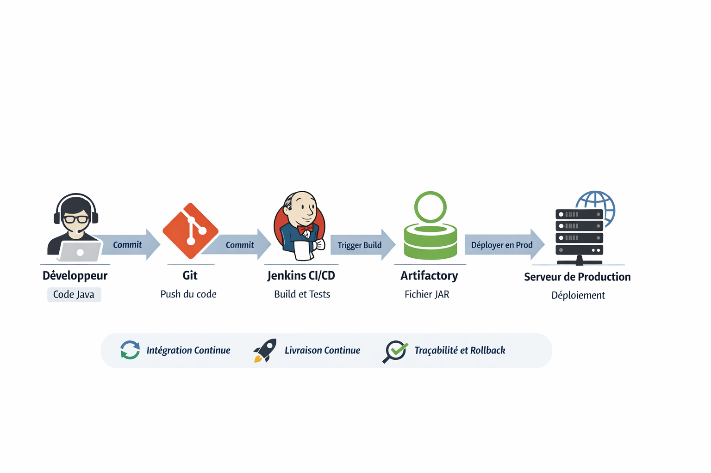

Contexte
Une équipe de développement travaille sur une application Java complexe. Elle souhaite automatiser les processus de build et de déploiement afin de :
- Accélérer les mises à jour en production.
- Réduire les erreurs humaines lors du déploiement.
- Assurer une traçabilité complète des artefacts générés.
Architecture du système
L’infrastructure mise en place suit les bonnes pratiques DevOps et intègre plusieurs outils complémentaires :
- Git : Gestion du code source et des branches de développement.
- Jenkins : Outil d’intégration continue pour automatiser les builds.
- Artifactory : Gestionnaire d’artefacts pour stocker les fichiers JAR et autres dépendances.
- Serveur de production : Environnement final où l’application est déployée.
Processus de déploiement
Le workflow complet se déroule en plusieurs étapes :
- Le développeur pousse son code sur le dépôt Git.
- Jenkins détecte automatiquement la mise à jour et déclenche un build.
- Le build génère un fichier JAR qui est ensuite publié dans Artifactory.
- Le pipeline CI/CD déploie automatiquement le JAR sur le serveur de production.
- Des tests automatisés sont exécutés pour valider la version déployée.
Ce processus garantit que chaque artefact est versionné et traçable, permettant ainsi de revenir à une version précédente en cas de problème.
Bonnes pratiques observées
- Utilisation d’un dépôt Artifactory distinct pour chaque environnement (dev, test, prod).
- Archivage des anciens artefacts plutôt que suppression.
- Contrôle strict des permissions selon le rôle de l’utilisateur.
- Journalisation complète des actions sur les artefacts pour auditer les déploiements.
- Automatisation maximale pour réduire les interventions manuelles.
Résultats obtenus
- Déploiement beaucoup plus rapide et régulier.
- Réduction significative des erreurs humaines.
- Traçabilité complète des artefacts et builds.
- Meilleure collaboration entre les équipes développement et opérations.
- Possibilité de rollback rapide en cas de problème grâce aux versions archivées.
Schéma du workflow
Le schéma ci-dessous illustre le processus de CI/CD avec Artifactory :
Conclusion
L’intégration d’Artifactory dans le processus CI/CD permet d’assurer un contrôle strict sur les artefacts, d’augmenter la vitesse de déploiement et de réduire les risques liés aux erreurs humaines. Cette approche est essentielle pour les équipes qui souhaitent adopter des pratiques DevOps efficaces.